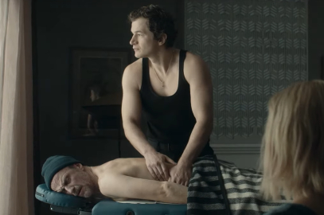
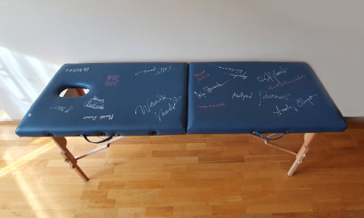

o mnie
Witam Państwa serdecznie. Nazywam się Wojciech Dyjak. Jestem dyplomowanym technikiem-masażystą, absolwentem Szkoły Masażu Klasycznego Lecznicznego i Sportowego "Daring Center” w Warszawie. Posiadam 12-letnie doświadczenie w branży. Naukę masażu rozpocząłem w 2000 roku. Masaż jest moją pasją i cały czas doskonalę swoje umiejętności oraz wiedzę. Ukończyłem również kurs techniki Modellingu, polegającego na skutecznej metodzie odchudzania i modelowania sylwetki oraz likwidowania cellulitu. Moje doświadczenie zawodowe obejmuje praktyki w sanatoriach oraz uzdrowiskach i szpitalu.
Brałem udział przy produkcji filmu: "Śniegu już nigdy nie będzie". Moją wiedzę i doświadczenie nt. masażu starałem się przekazać głównemu aktorowi filmu: Alecowi Utgoffowi. Stół do masażu, który był wykorzystany w filmie wraz z podpisami aktorów, przeznaczam na cel charytatywny.
Witam Państwa serdecznie. Nazywam się Wojciech Dyjak. Jestem dyplomowanym technikiem-masażystą, absolwentem Szkoły Masażu Klasycznego Lecznicznego i Sportowego "Daring Center” w Warszawie. Posiadam 12-letnie doświadczenie w branży. Naukę masażu rozpocząłem w 2000 roku. Masaż jest moją pasją i cały czas doskonalę swoje umiejętności oraz wiedzę. Ukończyłem również kurs techniki Modellingu, polegającego na skutecznej metodzie odchudzania i modelowania sylwetki oraz likwidowania cellulitu. Moje doświadczenie zawodowe obejmuje praktyki w sanatoriach oraz uzdrowiskach i szpitalu.
usługi masażu
Masaż jest najlepszym lekiem zarówno na ból jak i na stres. Są różne rodzaje masażu, dobierane do schorzeń i aktualnego samopoczucia. Skierowane są do wszystkich, którzy są zestresowani, skarżą się na bóle kręgosłupa, mają sztywne oraz coraz mocniej spięte plecy. W takich przypadkach najlepszym rozwiązaniem są masaże relaksacyjne, lecznicze.
Masaż jest najlepszym lekiem zarówno na ból jak i na stres. Są różne rodzaje masażu, dobierane do schorzeń i aktualnego samopoczucia. Skierowane są do wszystkich, którzy są zestresowani, skarżą się na bóle kręgosłupa, mają sztywne oraz coraz mocniej spięte plecy. W takich przypadkach najlepszym rozwiązaniem są masaże relaksacyjne, lecznicze.
oferta:
- Masaż segmentarny
- Masaż sportowy
- Masaż izometryczny
- Masaż limfatyczny
- Masaż relaksacyjny
- Masaż leczniczy
- Masaż odchudzający
Zamow wizyte teraz
masaż antycellulitowy
Nowe urządzenie Body Health 301 jest to najskuteczniejsze rozwiązanie w zwalczaniu cellulitu, nawet w jego najbardziej zaawansowanych stadiach. Zapobiega również powstawaniu nowych nierówności na skórze. Zabieg Body Health działanie: wspomaga natlenienie różnych tkanek, na które działa. Zwiększa ukrwienie rozstępów, a co za tym idzie, poprawia ich wygląd, wspomaga i poprawia elastyczność skóry, odblokowuje gruczoły łojowe i pory. Utrzymuje temperaturę ciała przez rozszerzenie naczyń krwionośnych i usuwanie potu, pozwalając w ten sposób na poprawę regulacji termicznej. Pomaga we wchłanianiu krwiaków. Wspomaga nawadnianie skóry; zwiększony dopływ krwi pozwala na wnikanie większej ilości składników odżywczych i widoczne gołym okiem zwiększenie elastyczności, napięcia i sprężystości.
Nowe urządzenie Body Health 301 jest to najskuteczniejsze rozwiązanie w zwalczaniu cellulitu, nawet w jego najbardziej zaawansowanych stadiach. Zabieg Body Health działanie: wspomaga natlenienie różnych tkanek, na które działa. Zwiększa ukrwienie rozstępów, a co za tym idzie, poprawia ich wygląd, wspomaga i poprawia elastyczność skóry, odblokowuje gruczoły łojowe i pory. Pomaga we wchłanianiu krwiaków, zwiększa elastyczność i sprężystość skóry.
Zamow wizyte teraz
masaż work-site
Work-Site to krótki skuteczny masaż pozwala szybko rozluźnić się, złagodzić dolegliwości oraz dodać energii i wigoru do dalszej pracy. Do tego typu masażu używane jest specjalnie zaprojektowane krzesło wyprofilowane tak, by zapewnić komfort osobie masowanej. Osoba siadając na krześle przyjmuje rozluźnioną pozycję, która jest bardzo wygodna i zmniejsza napięcie mięśniom. Masażowi poddane zostają okolice szyi, barków, ramion i lędźwi czyli miejsca, które w sposób szczególny narażone są na napięcia spowodowane stresem oraz siedzącym trybem życia. Niewątpliwą zaletą masażu w pracy jest to, że jest wykonywany przez ubranie, bez przebierania się do zabiegu oraz bez stosowania olejków do masażu. Czas zabiegu od 5 do 30 min.
Work-Site to krótki skuteczny masaż pozwala szybko rozluźnić się, złagodzić dolegliwości oraz dodać energii i wigoru do dalszej pracy. Do tego typu masażu używane jest specjalnie zaprojektowane krzesło wyprofilowane tak, by zapewnić komfort osobie masowanej. Osoba siadając na krześle przyjmuje rozluźnioną pozycję, która jest bardzo wygodna i zmniejsza napięcie mięśniom. Masażowi poddane zostają okolice szyi, barków, ramion i lędźwi czyli miejsca, które w sposób szczególny narażone są na napięcia spowodowane siedzącym trybem życia. Czas zabiegu od 5 do 30 min.
Zamów wizytę teraz
nowości
W 2020 roku brałem udział przy produkcji filmu: "Śniegu już nigdy nie będzie". Moją wiedzę i doświadczenie nt. masażu przekazałem głównemu aktorowi filmu: Alecowi Utgoffowi.
foto: interia.pl
Stół do masażu, który był wykorzystany w filmie wraz z podpisami aktorów, przeznaczam na cel charytatywny.
foto: Wojciech Dyjak